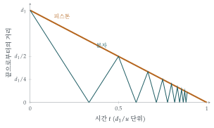

STEP I 2002, 문제 10
계속 읽기 전에 문제를 먼저 읽어 보자. 문제는 STEP Support Programme의 문제 데이터베이스에 있다: step.maths.org/questions/02-s1-q10
도입
자전거 타이어에 바람을 넣고 펌프를 만져 보면 뜨겁다. 기체를 압축하면 온도가 올라가는데, 이것은 디젤 엔진(압축만으로 연료에 불을 붙인다), 냉장고, 그리고 별이 생겨나는 과정의 바탕이 되는 원리이다. 그렇다면 압축은 왜 기체를 데우는가? 온도는 분자들의 평균 운동 에너지(kinetic energy)이므로, 질문은 이렇게 바뀐다. 분자들은 왜 빨라지는가?
이 문제는 분자 하나만으로 그 답을 보여 준다. 분자는 다가오는 피스톤에 부딪혀 튕겨 나올 때마다, 움직이는 라켓에 맞은 테니스공처럼 속력을 조금씩 더 얻는다. 충돌을 하나하나 정확히 따라가 보면 숨은 법칙이 드러난다. 분자의 속력과 실린더 길이의 곱이 거의 일정하게 유지된다는 것이다. 이러한 양을 단열 불변량(adiabatic invariant)이라 하며, 이것이 물리에서 배우는 기체 법칙의 미시적 기원이다.
시작하기 전에
속력 \(w\)로 움직이는 공이 속력 \(u\)로 자신을 향해 다가오는 벽에 부딪혀 탄성적으로(elastically) 튕겨 나온다. 튕겨 나온 뒤 공의 속력은 얼마인가? (벽의 기준틀에서 생각해 보라.)
벽의 기준틀(frame)에서 공은 \(w + u\)로 다가오고, 매우 무거운 물체에 탄성적으로 튕겨 나오므로 \(w + u\)로 멀어진다. 다시 지면의 기준틀로 돌아오면 벽은 튕겨 나오는 공과 같은 방향으로 \(u\)로 움직이고 있으므로, 공의 속력은 \(w + 2u\)이다. 다가오는 피스톤에 한 번 튕길 때마다 속력이 \(2u\)씩 늘어난다. (정지해 있는 실린더 끝에 튕기는 것은 아무것도 바꾸지 않는다.)
차근차근 풀기
단계 1 \(n\)번 충돌한 뒤의 속력
입자는 속력 \(v\)로 출발한다. 피스톤과 한 번 충돌할 때마다 속력이 \(2u\)씩 늘고, 끝과의 충돌은 속력을 바꾸지 않는다. 따라서 피스톤과 \(n\)번 충돌한 뒤에는 \[v_n = v + 2nu. \qed\]
단계 2 길이에 대한 점화식
\(n\)번째 충돌과 \((n+1)\)번째 충돌 사이에 입자는 피스톤에서 끝까지 갔다가 되돌아온다. 입자는 얼마나 이동하는가? 피스톤은 얼마나 움직이는가?
시간 \(t_n\) 동안 피스톤은 \(ut_n\)만큼 움직이므로 \(d_n - d_{n+1} = ut_n\)이다. 그동안 입자는 속력 \(v_n\)으로 피스톤에서 끝까지(거리 \(d_n\)) 갔다가 다시 피스톤까지(거리 \(d_{n+1}\)) 돌아오므로 \(d_n + d_{n+1} = v_nt_n\)이다. 한 식을 다른 식으로 나누면 \(t_n\)이 소거된다. \[\frac{d_n + d_{n+1}}{d_n - d_{n+1}} = \frac{v_n}{u}, \qquad\text{따라서}\qquad d_{n+1}(v_n + u) = d_n(v_n - u).\] \(v_n = v + 2nu\)를 대입하면 \[d_{n+1} = \frac{v + (2n - 1)u}{v + (2n + 1)u}\,d_n. \qed\]
단계 3 망원 소거
\(d_n\)을 \(d_1\)에 이런 분수 \(n - 1\)개의 곱을 곱한 꼴로 써 보라. 무엇이 약분되는가?
\[d_n = d_1 \cdot \frac{v + u}{v + 3u}\cdot\frac{v + 3u}{v + 5u}\cdots\frac{v + (2n - 3)u}{v + (2n - 1)u} = \frac{v + u}{v + (2n - 1)u}\,d_1. \qed\] 각 분자가 바로 앞의 분모와 약분되어, 첫 분자와 마지막 분모만 남는다(망원 소거(telescoping)).
단계 4 \(v = u\)인 경우
이때 \(d_n = \frac{2u}{2nu}d_1 = \frac{d_1}{n}\)이고, \[ut_n = d_n - d_{n+1} = d_1\Bigl(\frac1n - \frac{1}{n + 1}\Bigr) = \frac{d_1}{n(n + 1)}. \qed\] 이것들을 모두 더하면 \(u(t_1 + t_2 + \cdots) = d_1\bigl(1 - \frac12 + \frac12 - \frac13 + \cdots\bigr) = d_1\)이다. 즉 피스톤은 첫 충돌 후 시간 \(d_1/u\)에 실린더 끝에 도달하는데, 당연히 그래야 한다. 피스톤이 끝에 도달하기 전에 입자는 무한히 많이 튕긴다(그림 10.4.1).

돌아보기
충돌은 기준틀을 바꾸어 본다. 피스톤의 기준틀에서 보면 튕김은 자명하다.
두 식을 세워 미지수를 소거한다. 같은 시간 동안 입자와 피스톤이 이동한 거리로부터 \(t_n\)이 없는 점화식(recurrence)을 얻었다.
망원 소거. \(\frac{1}{n(n+1)}\)의 합이 그랬듯이, 곱도 한꺼번에 줄어들었다.
숨은 수학
단열 불변량
속력에 길이를 곱해 보자. \[v_n d_n = (v + 2nu)\cdot\frac{v + u}{v + (2n - 1)u}\,d_1 \approx (v + u)d_1\] 이 근사는 \(n\)이 크거나 \(u\)가 \(v\)보다 훨씬 작을 때 성립한다. 따라서 \[\text{속력} \times \text{길이} \approx \text{상수}.\] 피스톤이 분자에 비해 천천히 움직이면, 피스톤이 아무리 멀리 움직여도 곱 \(vd\)는 거의 변하지 않는다. 이처럼 계를 천천히 변화시킬 때 거의 일정하게 유지되는 양을 단열 불변량이라 한다. 일반적으로 왕복 운동의 단열 불변량은 \(\oint p\,\mathrm{d}q\), 즉 운동량(momentum)을 한 주기 동안 적분한 값이다. 여기서는 그 값이 \(mv \times 2d\)이다.
분자 하나에서 기체로
\(v \propto 1/d\)이므로 운동 에너지 \(\frac12mv^2\)은 \(1/d^2\)에 비례한다. 한 방향으로 움직이는 많은 분자로 이루어진 기체에서 온도는 평균 운동 에너지에 비례하므로 \(T \propto 1/d^2\)이다. 즉 길이를 절반으로 줄이면 온도는 네 배가 된다. 3차원에서는 에너지가 세 운동 방향에 나누어지며, 같은 논증(파인먼(Feynman)이 그의 강의록에서 제시한다)으로부터 단원자 기체(monatomic gas)의 단열 압축 법칙을 얻는다. \[TV^{2/3} = \text{상수}, \qquad\text{또는 동치로}\qquad pV^{5/3} = \text{상수}.\] 지수 \(\frac53\)은 단원자 기체의 유명한 비열비(ratio of specific heats) \(\gamma\)이다. 자전거 펌프 속 공기를 부피의 5분의 1로 압축하면, 빠르게 하여 열이 전혀 빠져나가지 않는다고 할 때 절대 온도가 \(5^{0.4} \approx 1.9\)배로 올라간다(공기 분자는 원자 두 개로 이루어져 있어 대신 \(\gamma = 1.4\)가 된다). 즉 \(20^\circ\)C에서 약 \(280^\circ\)C까지 오른다. 펌프가 그만큼 뜨거워지지 않는 것은 오로지 압축이 느리고 열이 새어 나가기 때문이다.
1949년 엔리코 페르미(Enrico Fermi)는 우주에서 엄청난 에너지를 지니고 날아오는 입자인 우주선(cosmic rays)이 바로 이 문제의 분자와 똑같은 방식으로 가속된다고 제안하였다. 성간 기체 구름 속에서 움직이는 자기장에 거듭 튕기면서 매번 에너지를 조금씩 얻는다는 것이다. 오늘날 “페르미 가속(Fermi acceleration)”은 초신성 잔해의 충격파에서 일어나는 것으로 여겨지는데, 그곳에서 입자들은 피스톤과 벽 사이의 분자처럼 충격파를 앞뒤로 가로지른다. 단열 불변량은 양자역학의 탄생에도 한몫을 하였다. 1916년 파울 에렌페스트(Paul Ehrenfest)는 느린 변화로는 계가 양자 상태 사이를 건너뛸 수 없으므로, 양자화되는 양은 단열 불변량이어야 한다고 주장하였다.
사고 기술
과정이 반복될 때는 한 주기를 정확히 기술하고, 한 주기에서 다음 주기로 상태가 어떻게 바뀌는지 적는다.
여기서 상태는 각 충돌 때의 (속력, 길이) 쌍이었다. 점화식은 정확히 풀 수 있었고, 그 해는 근사적으로 보존되는 양을 드러냈다. 대학에서는 같은 접근(한 주기를 본 다음 점화식이나 “귀환 사상(return map)”을 세우는 것)을 궤도, 진동자, 그리고 8.7 절의 반복 사상(iterated maps)에 사용한다.
더 도전하기
정확한 불변량. \(v_nd_n - (v + u)d_1 = \frac{u(v + u)d_1}{v + (2n - 1)u}\)임을 보이고, 이로부터 \(n \to \infty\)일 때 \(v_nd_n \to (v + u)d_1\)임을 유도하라.
피스톤을 당겨 빼기. 피스톤을 속력 \(u < v\)로 빼내는 경우에 대해 문제를 다시 풀어라. 입자가 느려짐을 보이고, \(v_nd_n\)을 구하라. (팽창하는 기체는 식는다.)
에너지. \(v = u\)인 경우, 피스톤이 끝에 가까워질수록 분자의 속력은 한없이 커진다. \(n\)번째 주기 동안 피스톤에 작용하는 평균 힘(운동량의 변화를 \(t_n\)으로 나눈 값)을 구하고, 그것이 \(n^3\)처럼 커짐을 보여라. 이것은 피스톤을 끝까지 밀어 넣는 데 필요한 일에 대해 무엇을 말해 주는가?
튀는 공. 중력 아래에서 공이 바닥에 탄성적으로 튀고, 바닥을 천천히 들어 올린다. 이 운동의 단열 불변량을 추측해 보라. (힌트: \(vd\)에 해당하는 것은 평균 속력과 튀어 오르는 높이의 곱, 또는 동치로 에너지와 튀는 사이의 시간의 곱이다.)
더 읽을거리
Richard Feynman, Robert Leighton & Matthew Sands, The Feynman Lectures on Physics, Vol. I (온라인 무료 공개), 39장 “The kinetic theory of gases”(기체 운동론). 같은 피스톤 논증을 3차원으로 확장한다.
Stephen Blundell & Katherine Blundell, Concepts in Thermal Physics (Oxford University Press). 대학 1학년 수준에서 다루는 단열 과정과 기체 운동론.
Lev Landau & Evgeny Lifshitz, Mechanics (Butterworth-Heinemann), §49. 단열 불변량을 간결하게 다룬다. 나중을 위한 책이다.